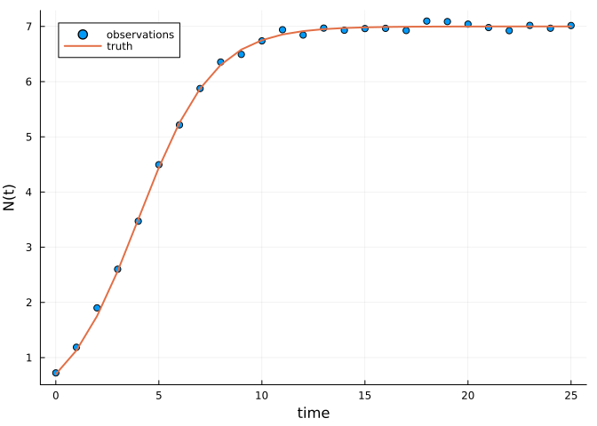
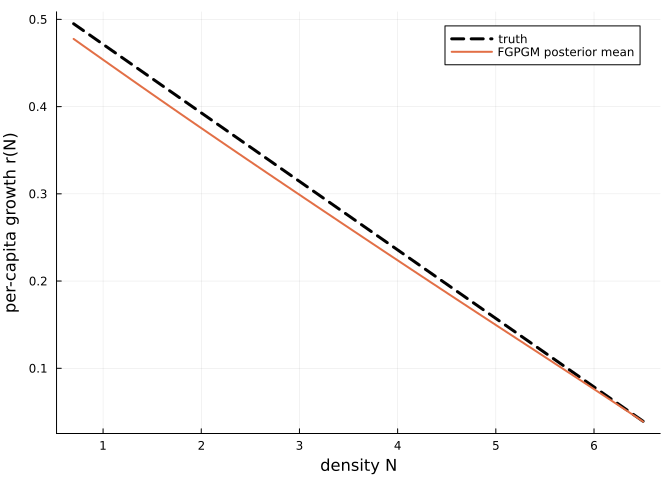

Fast Gaussian Process Gradient Matching
Overview
FGPGMSolver implements Fast Gaussian Process Gradient Matching (Wenk et al. 2019). Like the other gradient-matching methods in this package it avoids integrating the ODE inside the fitting loop; unlike them it is Bayesian, sampling the joint posterior of the states and the unknown-function coefficients rather than optimizing a point estimate.
The idea is a product of experts. A Gaussian process over the states gives one opinion about the derivative at each time; the model’s right-hand side gives another; FGPGM multiplies the two densities and samples from the result. The parameter $\gamma$ controls how strictly the two must agree.
The practical consequences are worth knowing before you reach for it:
- It returns a posterior, so you get uncertainty without a bootstrap.
- It is a fixed-budget sampler: it always reports
converged = falsewithreason = :maxiters, because a sampler has no stopping criterion to satisfy. That is honest reporting, not a failure — judge it by R̂ and ESS ofconvergence.chains, and by the acceptance rates. - It is ODE-only: DDE problems are rejected with an error.
using PartiallySpecifiedModels
using OrdinaryDiffEq
using Plots; default(fmt=:png)
using Random
Random.seed!(5)TaskLocalRNG()Logistic growth with an unknown per-capita rate
r_true(N) = 0.55 * (1 - N / 7.0)
f_true!(du, u, p, t) = (du[1] = r_true(u[1]) * u[1])
st = solve(ODEProblem(f_true!, [0.7], (0.0, 25.0)), Tsit5(); saveat=1.0)
ts = collect(st.t)
Y = reshape([st(t)[1] for t in ts] .+ 0.06 .* randn(length(ts)), :, 1)
scatter(ts, Y[:,1], label="observations", ms=4, xlabel="time", ylabel="N(t)")
plot!(ts, [st(t)[1] for t in ts], lw=2, label="truth")
Sampling
dyn!(du, u, p, t) = (du[1] = p.r(u[1]) * u[1])
prob = PSMProblem(dyn!, [0.7], (0.0, 25.0),
[BSplineApproximator(:r, (0.0, 8.0), 6; initial = x -> 0.3)];
data_times=ts, data_values=Y, obs_to_state=[1],
known_params=NamedTuple(), likelihood=Gaussian(), solver=Tsit5())
sol = solve(prob, FGPGMSolver(n_samples=3000, n_warmup=1500, rng_seed=2))
(; data_loss = sol.data_loss,
converged = sol.convergence.converged,
reason = sol.convergence.reason,
iterations = sol.convergence.iterations)(data_loss = 0.07259211901848119, converged = false, reason = :maxiters, iterations = 4500)converged = false with reason = :maxiters is the expected and correct output. Read it as “the budget was spent”, not “the fit failed” — and then go and look at the diagnostics that do carry information:
keys(sol.convergence)(:method, :sampler, :chains, :beta_samples, :state_mean, :gp_hyperparams, :accept_rates, :converged, :reason, :iterations)Did the chain converge?
convergence.chains is an MCMCChains.Chains object over the spline coefficients, so the standard sampler diagnostics apply directly. Split-R̂ near 1 (below about 1.05) and an effective sample size in the hundreds are what a usable posterior looks like; the accept rates should sit near the target_accept of 0.234 the warmup adaptation aimed for.
using MCMCChains
es = ess_rhat(sol.convergence.chains)
(; rhat_max = maximum(es[:, :rhat]),
ess_min = minimum(es[:, :ess]),
accept = sol.convergence.accept_rates)(rhat_max = 1.0074001747169865, ess_min = 106.32308253290334, accept = (x = [0.25233333333333335], theta = 0.21333333333333335))esESS/R-hat
parameters ess rhat ess_per_sec
Symbol Float64 Float64 Missing
r[1] 118.9785 1.0027 missing
r[2] 106.3231 1.0013 missing
r[3] 116.7805 1.0005 missing
r[4] 109.4677 1.0074 missing
r[5] 140.7774 1.0051 missing
r[6] 127.0320 1.0018 missingThe budget matters here more than for the point-estimate solvers. The θ block is a joint random walk over six correlated coefficients whose proposal covariance is learned during warmup (adaptive Metropolis; Haario et al. 2001) and frozen afterwards. With too little warmup that covariance has not settled and the chain crawls: at n_samples=400, n_warmup=200 this same fixture gives R̂ ≈ 1.2 and an ESS of a few draws, while n_samples=3000, n_warmup=1500 gives R̂ ≈ 1.01 and ESS above 100 — at a cost of well under a second, because nothing here integrates the ODE. The coefficients at the edges of the spline domain (where there are few or no data) mix slowest, which is why the minimum ESS, not the average, is the number to watch. If you see R̂ above 1.05, raise n_warmup before raising n_samples.
Recovered growth rate
gx = collect(range(0.7, 6.5, length=60))
rhat = sol.unknown_functions[:r]
plot(gx, r_true.(gx), lw=3, ls=:dash, c=:black, label="truth")
plot!(gx, rhat.(gx), lw=2, label="FGPGM posterior mean")
xlabel!("density N"); ylabel!("per-capita growth r(N)")
(; max_abs_error = maximum(abs.(rhat.(gx) .- r_true.(gx))))(max_abs_error = 0.01788881290597255,)Where FGPGM sits among the integration-free methods
| Solver | Style | Returns | Cost |
|---|---|---|---|
GradientMatching | penalized least squares on derivatives | point estimate | cheapest |
TwoStageSolver | smooth, then match | point estimate | cheap |
AdaptiveGradientMatching | GP + MCMC over states and parameters | posterior | expensive |
FGPGMSolver | GP product-of-experts, MCMC | posterior | expensive |
Reach for FGPGM when you want gradient matching’s avoidance of the ODE solve and honest uncertainty, and can afford a sampler. If a point estimate will do, GradientMatching or TwoStageSolver will get there far faster — see the gradient-matching vignette for those.
References
- Wenk, P., Gotovos, A., Bauer, S., Gorbach, N., Krause, A. & Buhmann, J.M. (2019). Fast Gaussian process based gradient matching for parameter identification in systems of nonlinear ODEs. AISTATS 89:1351–1360.
- Haario, H., Saksman, E. & Tamminen, J. (2001). An adaptive Metropolis algorithm. Bernoulli 7(2):223–242.